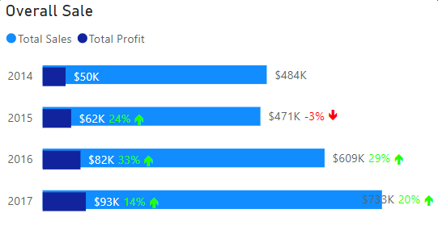
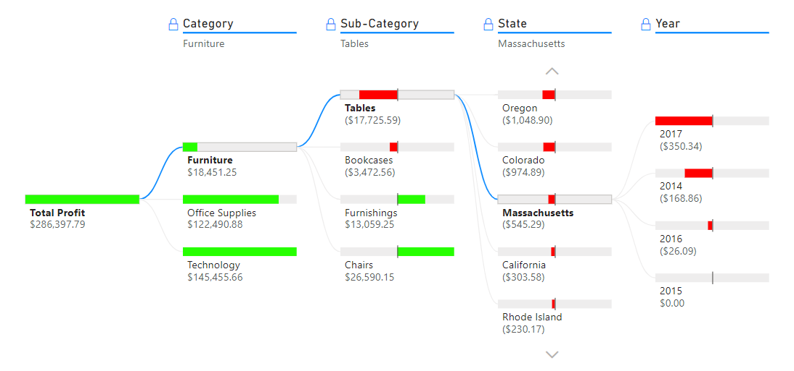
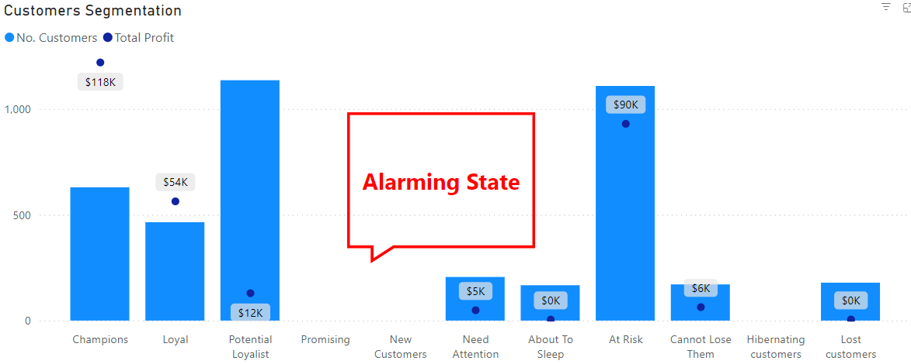

Overview

I chose this project because I wanted to see how data can uncover insights and drive business decisions.
Working with real sales and profit data let me apply my analytical skills in a practical context. It was also a chance to build a dashboard that is both attractive and easy to use, which sharpened my Power BI skills.
Interactive Dashboard
Steps Taken and Reasons
Steps I Took
- Step 1: Defined the business goals and turned them into a project plan
- Step 2: Cleaned the data in Excel
- Step 3: Added new calculated variables
- Step 4: Explored the data in Power BI
- Step 5: Drew insights and recommendations
Why These Steps
- Step 1: To make sure the project meets stakeholder requirements
- Step 2: To ensure the data is in the correct format and error-free
- Step 3: To add depth to the analysis
- Step 4: To discover insights relevant to the project objectives
- Step 5: To share findings with stakeholders along with clear recommendations
Key Insights
1. The "Tables" sub-category keeps losing money

One of the most interesting findings was the poor performance of the "Tables" sub-category. It has declined year over year, ending with an $8K loss in 2017, almost 50% of its $18K lifetime losses.
Breaking the data down by state shows that most losses occurred in 2014 and shrank in the following years. This could be explained by high initial investment or aggressive promotions during the launch phase. However, a few states (such as Massachusetts and Florida) still recorded significant losses in 2017, which suggests they may not be good markets to keep investing in.
If the business decides to stay in these markets, the next step is to identify the root causes of the losses in each state (for example discount levels, shipping costs or pricing) before making strategic adjustments.
2. Customer segmentation: high-value customers are at risk

The business currently lacks New and Promising customers, a gap that could cause problems in the future.
Potential Loyalists generate about $12K in profit from roughly 10,000 customers. This is acceptable, as this group consists of low spenders who shop frequently.
The priority should be the At-Risk customers: also around 10,000 people, but generating about $90K in profit. They spend a lot but have not purchased recently. Targeted campaigns could win them back, for example:
- Loyalty program: reward points on every purchase that can be redeemed for discounts.
- Exclusive offers: personalized promotions based on each customer's purchase history.
To support this, I prepared a customer segment list with each customer's most recent purchases, which a sales team could use to understand their interests.